39PDF 第 86–87 頁
信任首發
第一個月先建立共同語言。
資優生家長的認定往往建立在第一印象。教師應在開學第一個月透過聯絡簿等管道，優先與家長達成默契與信任。
情境
新學期剛開始的第一個月。
教師行動
透過聯絡簿、電話等管道，主動回報資優生正向表現，關懷寒暑假情形，與新學期的期待，先單獨和家長達成默契。
核心心理
取得共同語言和目標，培養彼此信任感，日後遇到問題才好溝通。
對照原文 · PDF 第 87 頁
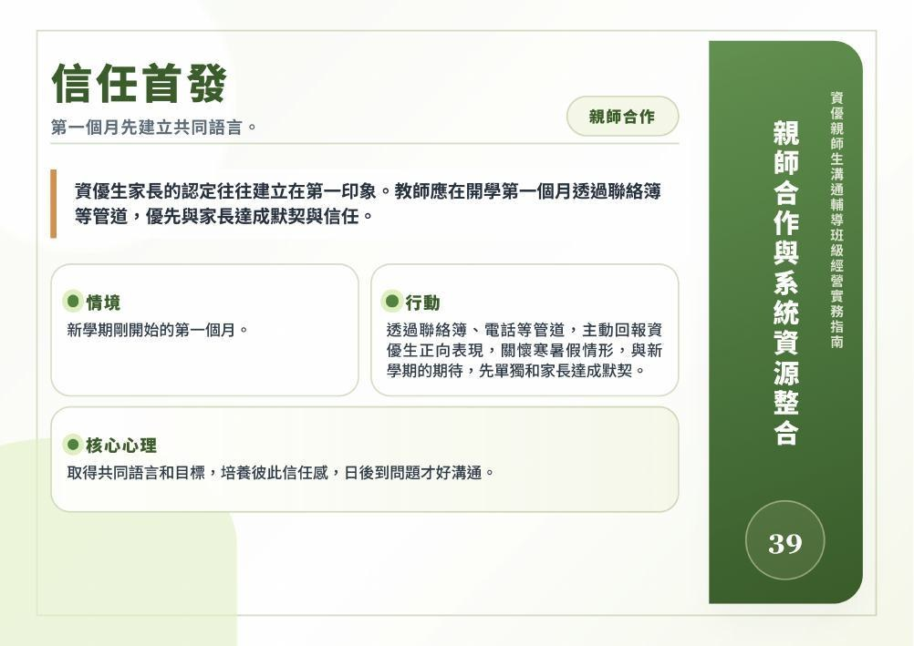
CHAPTER 04 / 策略 39–48
把支持連成一張網
親師合作從信任與共同語言開始。當問題超出單一教師的能力，連結資優班、輔導室、行政與其他專業資源，形成一致的支持方向。
以下文字已逐張對照原頁校對；各牌卡仍可展開「對照原文」。
第一個月先建立共同語言。
資優生家長的認定往往建立在第一印象。教師應在開學第一個月透過聯絡簿等管道，優先與家長達成默契與信任。
新學期剛開始的第一個月。
透過聯絡簿、電話等管道，主動回報資優生正向表現，關懷寒暑假情形，與新學期的期待，先單獨和家長達成默契。
取得共同語言和目標，培養彼此信任感，日後遇到問題才好溝通。

讓信任的人接手降溫。
當學生在校發生衝突時，若已與其家長建立信任關係，可請家長在家中協助安撫與緩解情緒，溝通會更順暢；或透過資優班老師協助處理。
當資優生在校發生衝突，資優生情緒失控，較難在校內平復情緒且無法與其對談。
聯絡已建立信任的家長或資優班老師，請求支援接手安撫與緩解資優生情緒。
建立情緒安全通道，並由資優生信任的重要他人接手安撫與緩解情緒，能夠有效打破衝突的僵局，讓後續溝通順利。
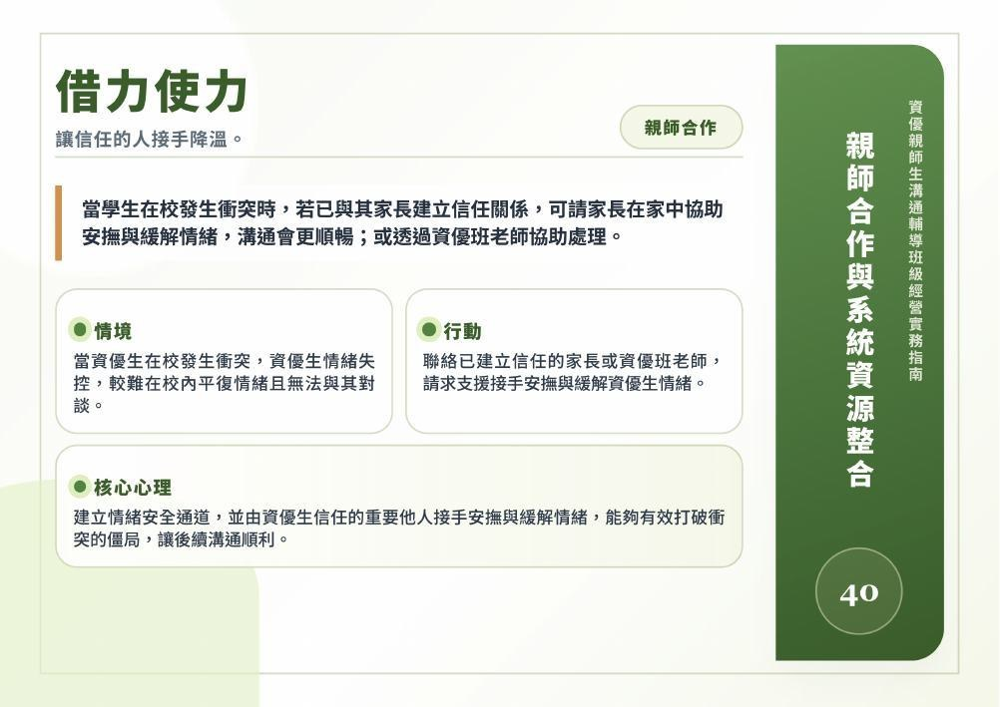
大人站穩，孩子就少鑽縫。
當資優生挑戰教師規定時，家長若態度搖擺不定，容易讓學生有恃無恐，教師與家長應共同站穩立場，學生就不敢得寸進尺。
資優生試圖試探教師底線，企圖挑戰規範或鑽漏洞。
親師共同擬定規範、教養底線，並當面共同下達最終指令。
資優生極其敏銳，只要發現大人之間不退讓、無縫隙可鑽，且親師立場一致，就不敢得寸進尺。
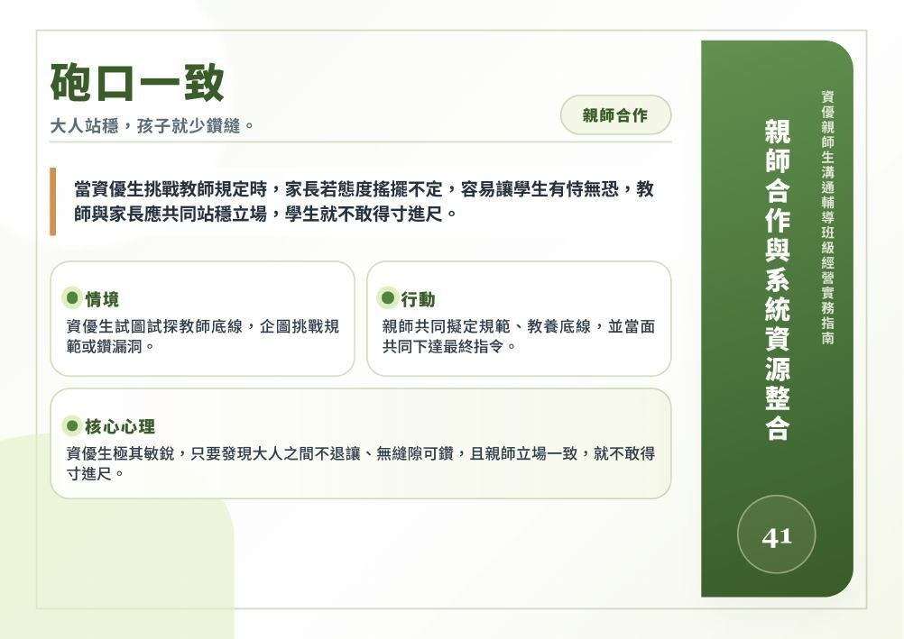
保留彈性，用成效說話。
遇到主導性極強或具備學科背景的家長提出質疑時，教師應展現柔軟度「退一步」，用時間證明教學成效。
家長具有相關學科專業背景，頻繁提出質疑與建議，並要求調整教材、進度及評量方式，造成教師溝通與教學壓力。
當下不急於辯證，柔性堅持立場，彈性調整內容（例如增加區分性教學比例或給予難度較高作業）。
用時間與實際教學成效，證明自己的教學專業。
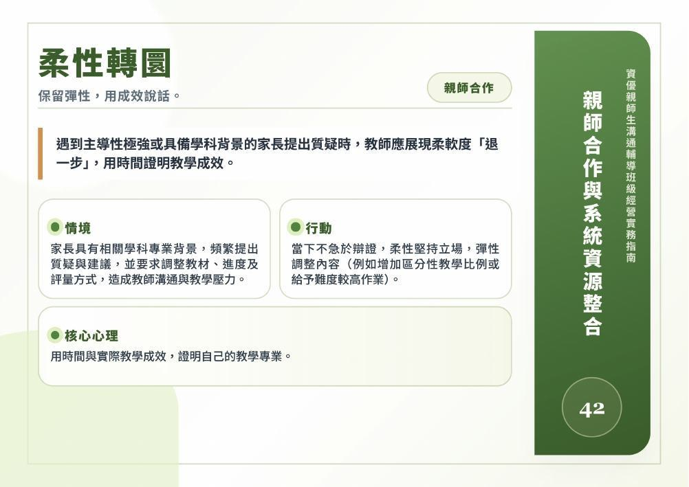
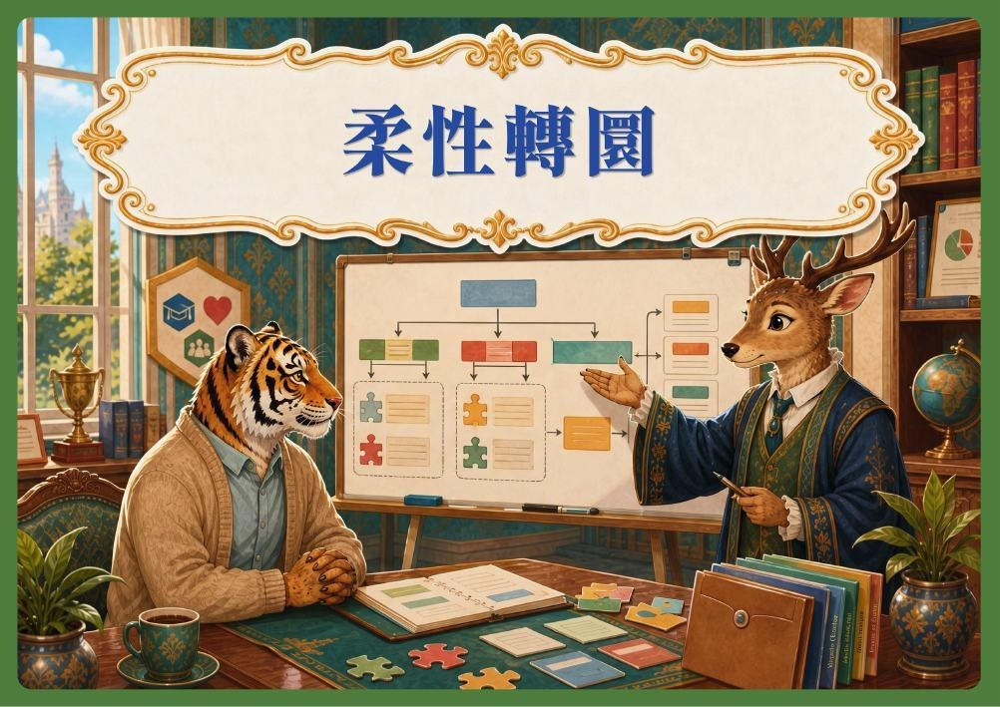
嚴重個案不要單打獨鬥。
普通班導師遇到嚴重情緒糾結的個案時，應主動結合資優班教師、輔導室及學務處交流尋求支援。
資優生上課頻繁質疑教材內容、堅持追問超出課程範圍議題，並因同儕無法跟上其思考速度而產生衝突，認為資優生故意挑戰師長權威。
應主動向相關單位如輔導室、學務處或資優班教師交流尋求支援。
以學生需求為核心，積極同理傾聽，主動連結專業資源，共同研擬適切支持與輔導策略。
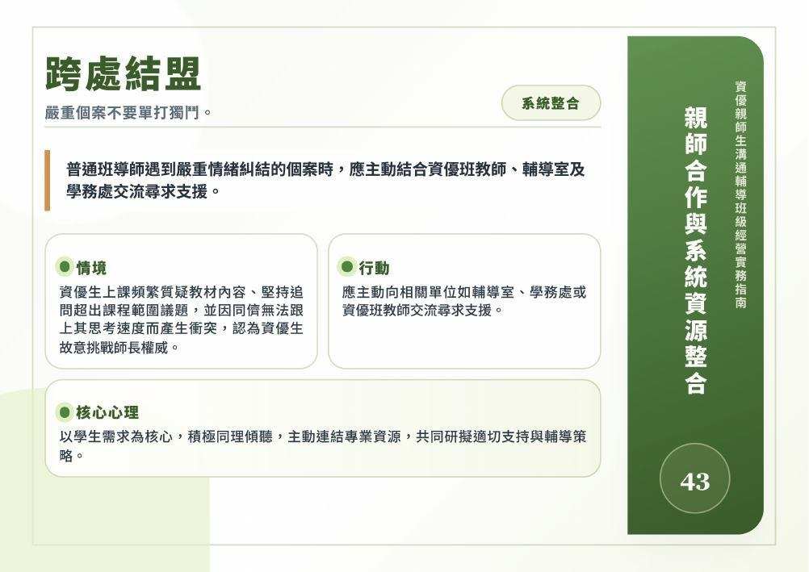
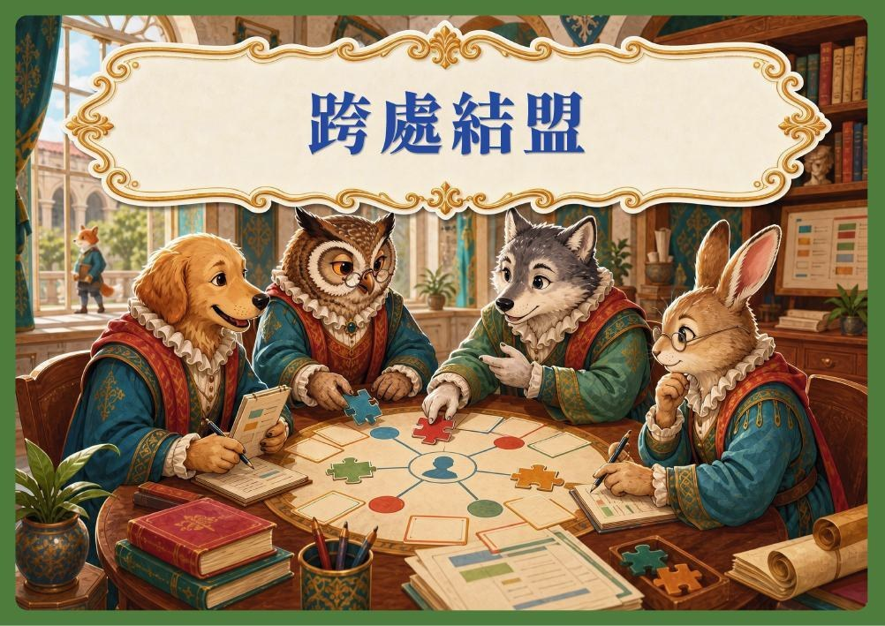
依法行政，也保留教育專業。
當學生利用鑽研法規不斷申訴（如為了一個遲到紀錄四處提告），學校應堅守既定流程，不能任意撤銷而破壞合理的原則。
資優生鑽研校規反覆申訴違規紀錄，家長全力支持並持續向學校施壓，引發行政濫訴，造成校園行政困擾。
學校行政與導師應依法行政、完整留存紀錄，主動尋求專業諮詢，共同研擬溝通與輔導策略，協調可行解決方案，不宜全盤接受不合理的要求。
秉持依法行政與教育專業，理性溝通協調，化解衝突，兼顧學生權益、責任意識與校園和諧。
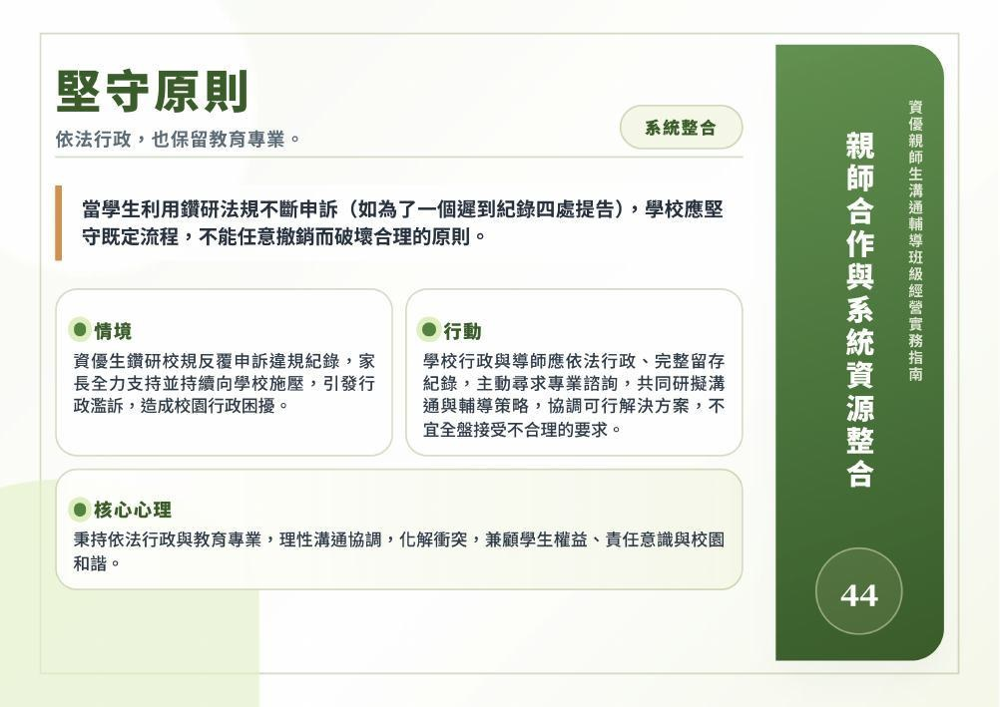
從法律威嚇轉向人際共好。
部分學生源自成長過程養成錯誤觀念。教師需嘗試引導家長，將過度防衛轉向人際共好的教育精神。
資優學生從小養成以法律恫嚇他人的觀念，以致資優生現今遇爭議即援引法規威脅，拒絕接受勸導與調解。
耐心傾聽學生訴求，結合輔導資源協助建立理性對話。
尊重學生權利與法治精神，引導同理他人、兼顧事件多方觀點，培養責任意識、理性溝通與社會適應能力。
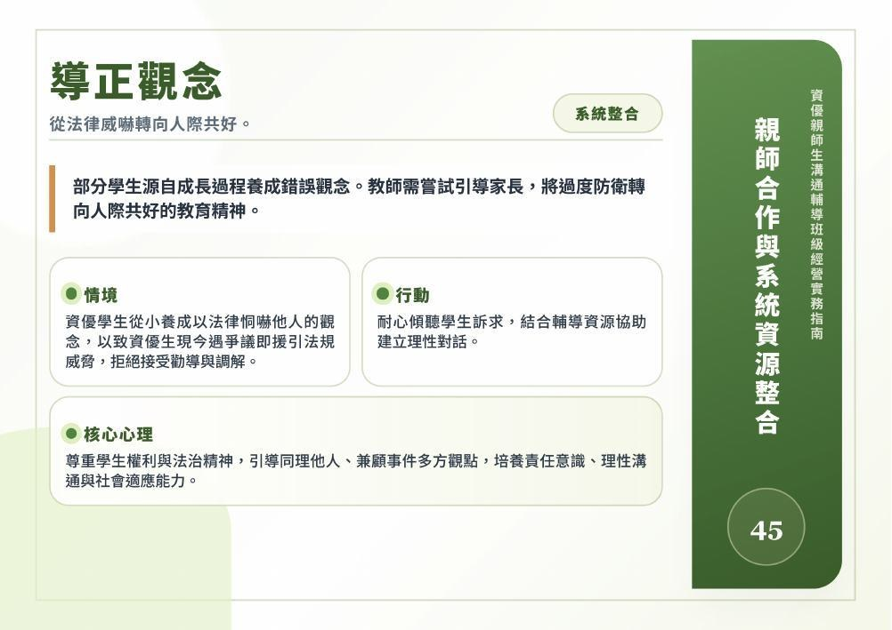
能力再高，也要學會群體規範。
部分家長抱持「這學校的安排與我小孩的資質無法適配」的優越心態。教師應引導家長理解，遵守群體規範同樣是資優生必學課題。
家長認為孩子能力遠超同儕，屢屢質疑課程安排，要求特殊待遇並挑戰學校決策。
透過參與IGP會議，從適性教育角度溝通，說明學業、品格、人際均衡發展重要性，共同規劃學生適性成長。
秉持五育均衡發展理念，兼顧認知、情意與社會發展，促進適性成長與健全人格養成。
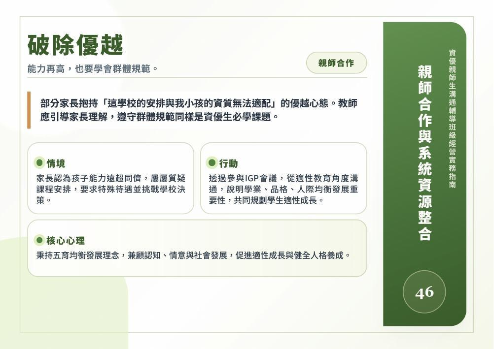
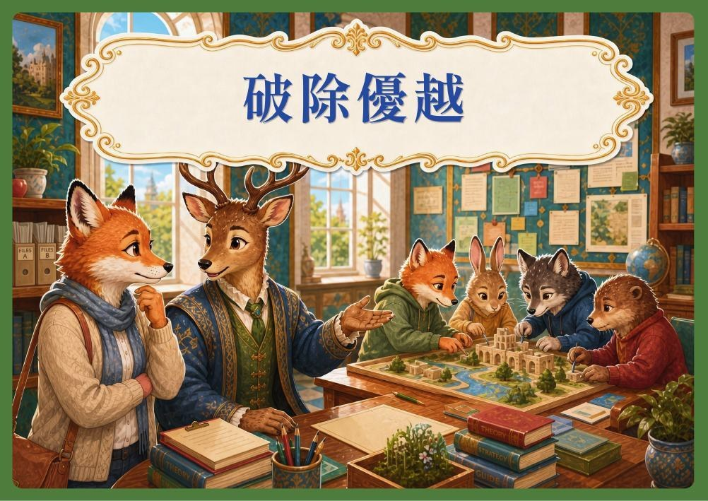
觀察、溝通，連結專業評估。
對於接受治療或服藥的學生，需與家長密切溝通掌握醫療與服藥狀況。
發現資優學生長期注意力不穩、情緒起伏大且影響學習與人際。
紀錄觀察學生平時學習與行為，主動與家長溝通，建議尋求專業醫療評估機制。
以學生最佳利益為核心，重視早期發現與跨專業合作，提供適切支持，促進身心健全發展。
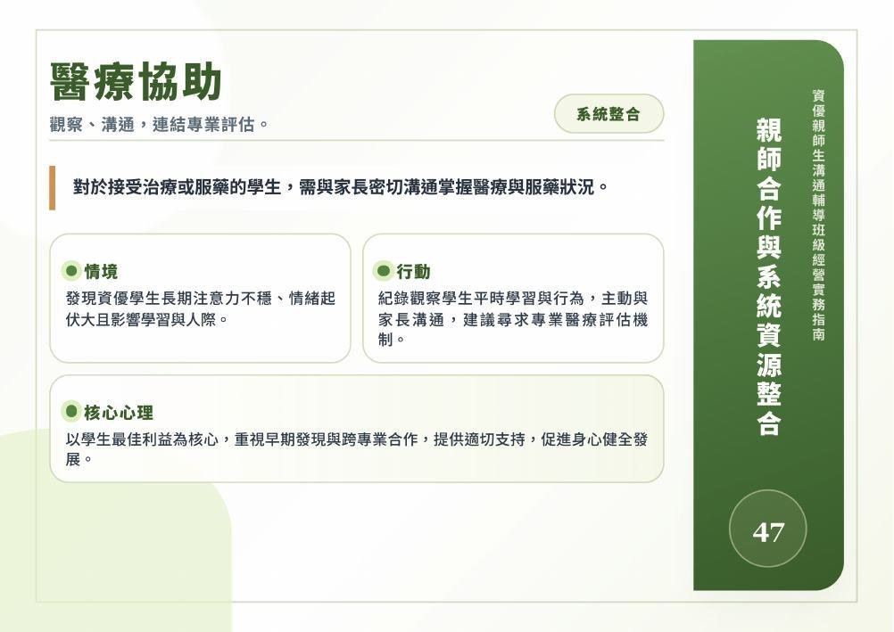
透明溝通，降低群組焦慮。
面對家長於網路群組頻繁討論班級事務、轉傳未查證訊息或表達質疑時，教師需主動釐清資訊並維護親師互信。
家長於網路群組頻繁討論班級事務，未經查證即轉傳訊息或表達質疑，引發家長間誤解與焦慮，影響班級經營及親師互信關係。
主動提供正確資訊與溝通管道釐清疑慮，並引導家長理性討論，共同維護良好親師合作氛圍。
建立透明溝通機制，促進親師夥伴關係，營造支持學生學習與成長的正向教育環境。
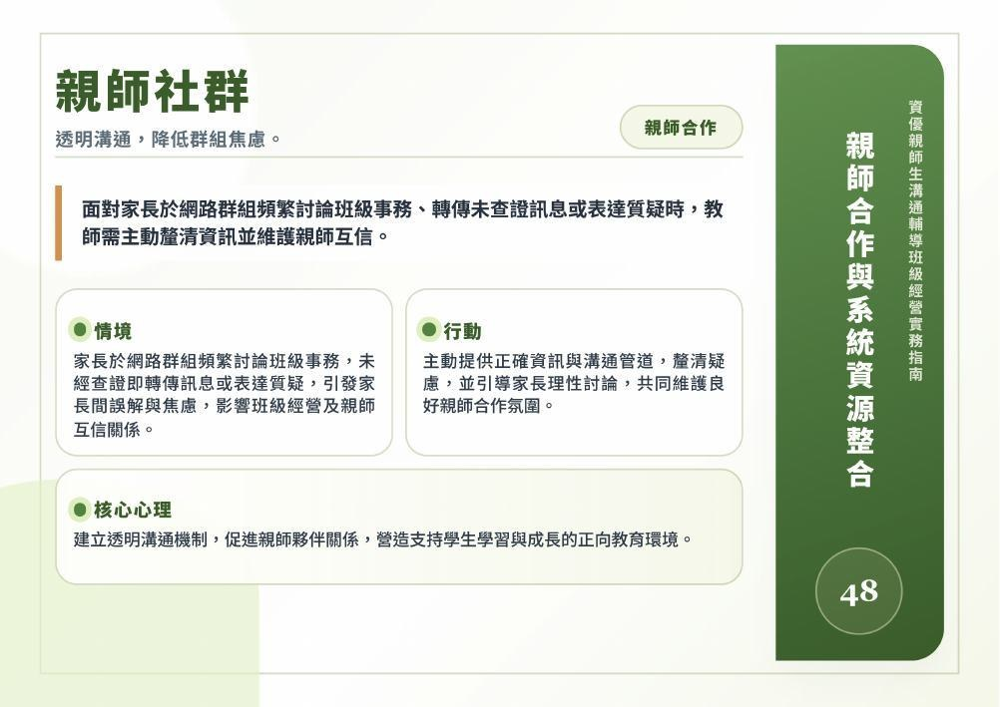
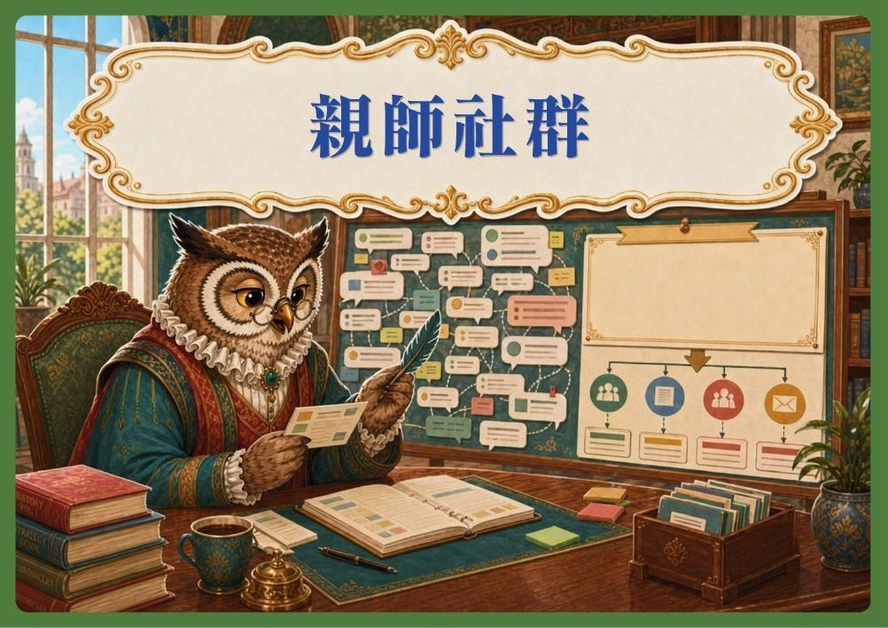